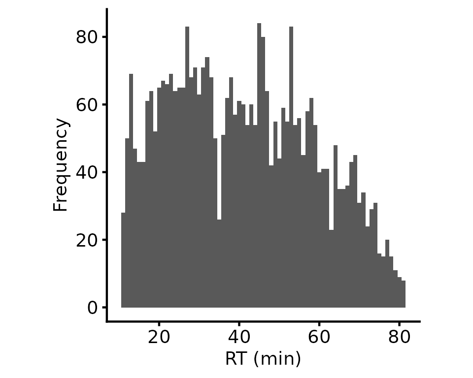
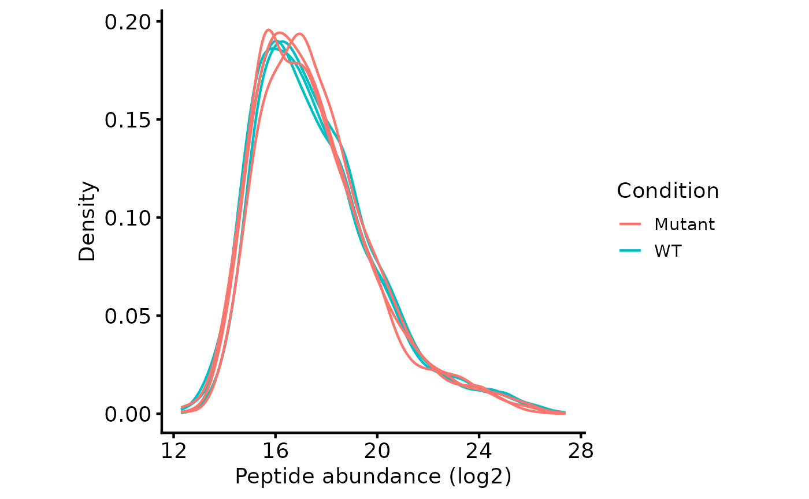
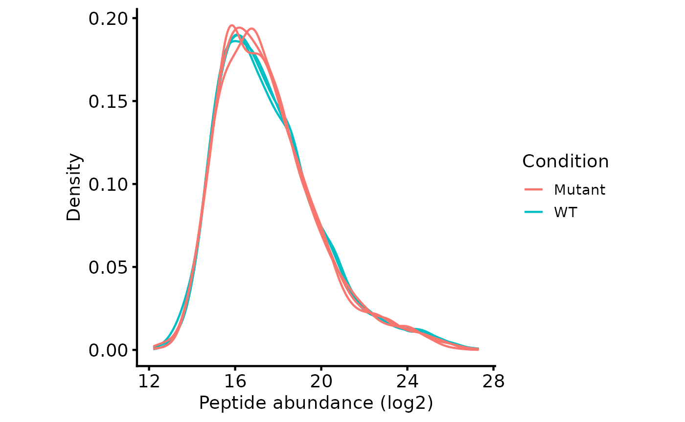
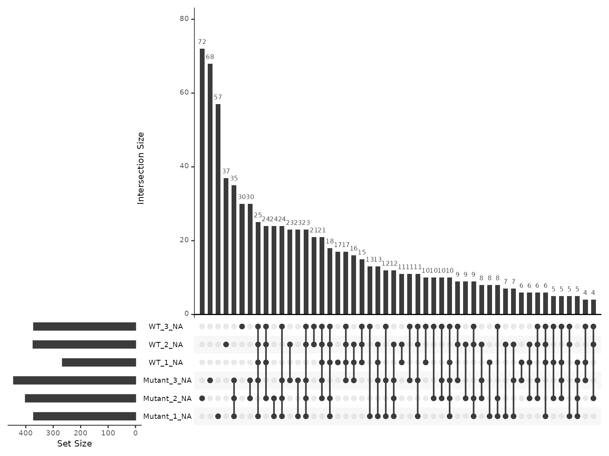
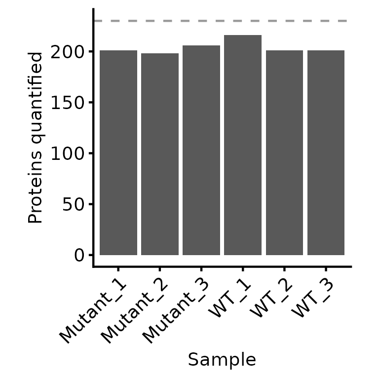
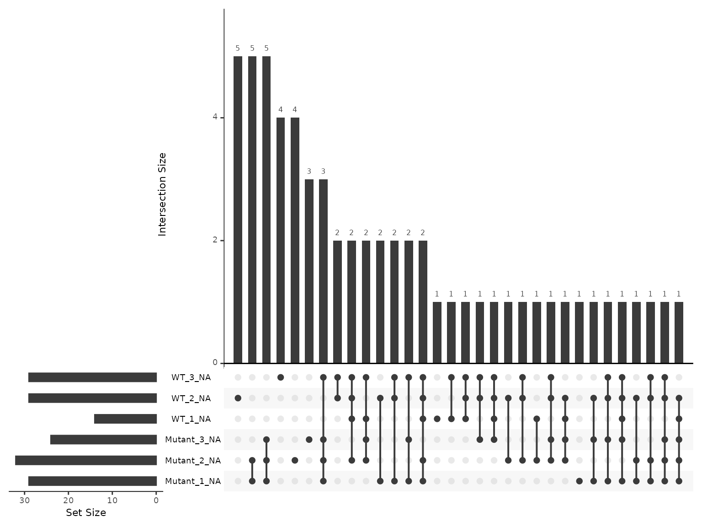
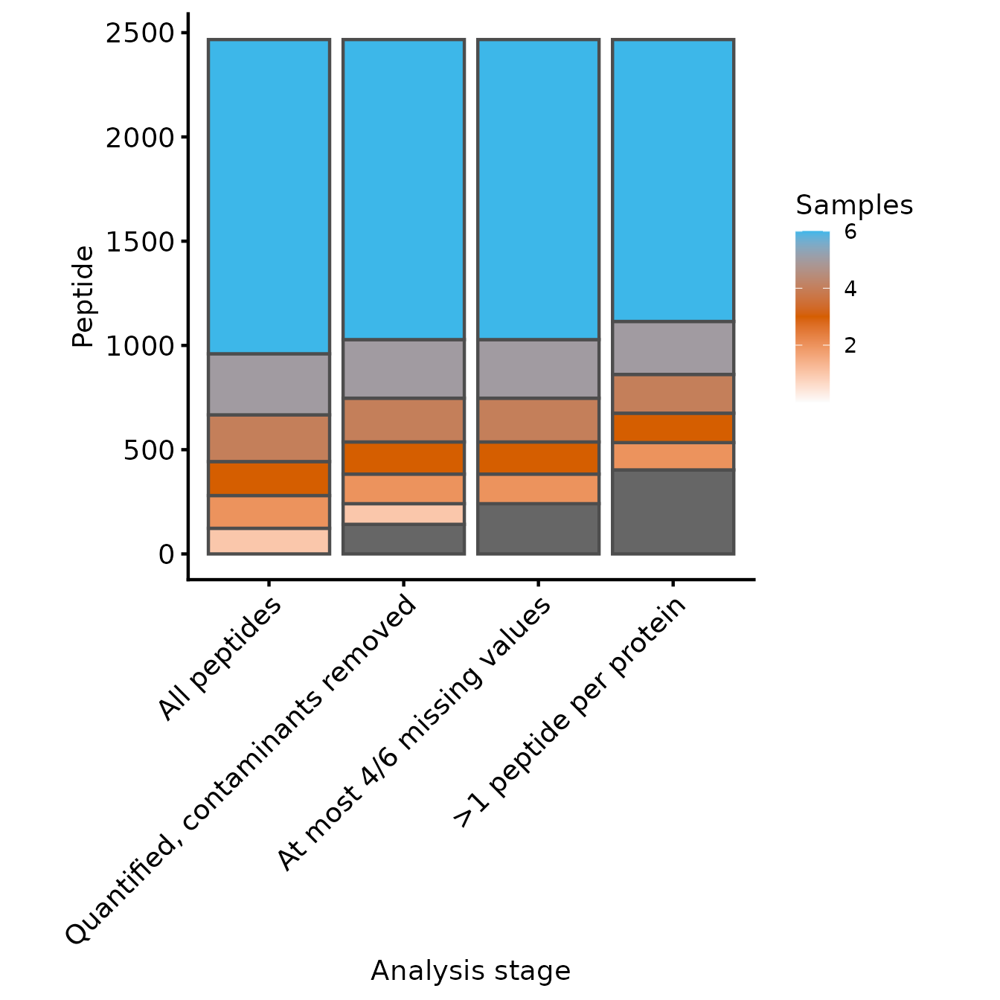
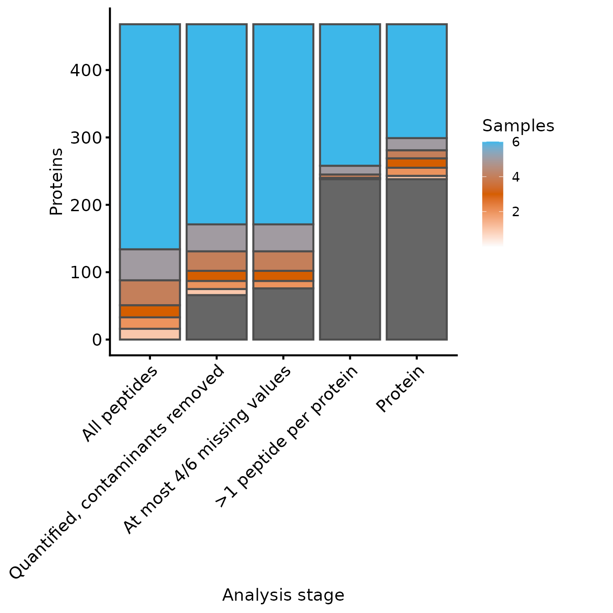

LFQ-DDA workflow: peptide QC and protein summarisation
Tom Smith
2026-09-11
Source:vignettes/LFQ_DDA_Peptide_QC_Summarisation.Rmd
LFQ_DDA_Peptide_QC_Summarisation.RmdLabel-Free Quantification (LFQ) is the simplest form of quantitative bottom-up proteomics, in which different samples are quantified in separate MS runs. Quantification is either performed by Data-Dependent Acquisition (DDA), where the Mass Spectrometer triggers fragmentation of ions within a given m/z range with the aim being to focus attention of individual peptides separately, or Data-Independent Acquisition (DIA), where a much wider m/z range is used and a mix of peptides are co-fragmented and quantified simultaneously by deconvoluting the resultant complex spectra. This article covers LFQ-DDA; DIA is a different enough problem to have its own, in LFQ-DIA precursor QC.
Since each sample is run separately, different peptides will be quantified in each sample and the peptide intensities may not be directly comparable between samples. The common solution to the higher burden of missing values is to use the ‘match-between-runs’ (Cox et al. 2014), or the functionally equivalent ‘Minora’ algorithm employed by Proteome Discoverer (PD). These algorithms use the observed retention times of MS1 ions which were successfully spectrum matched in one sample to identify the likely peptide sequence of MS1 ions that could not be spectrum matched in another sample. However, even with these algorithms enabled, DDA LFQ will still typically have many more missing values than labelled proteomics, e.g TMT.
The analysis is straightforward in outline. Three of its steps carry most of the risk — normalisation, the missing value threshold, and the protein inference that summarisation rests on — and each is flagged where it arrives below.
This vignette works through one typical experiment from end to end: a whole-proteome comparison between two conditions, three replicates each. That is the common case, and the choices made below are the conventional ones for it. An enrichment experiment — an IP, BioID or TurboID pulldown — needs different reasoning about normalisation and about missing values, and is covered in enrichment designs.
If this is your first analysis with the package, getting started explains which route applies to your experiment and shows a complete one in forty lines, and working with QFeatures objects covers the object every step below operates on. Annotations are worth retrieving before any of this — see protein annotation.
The experimental design
lfq_dda_pd_PeptideGroups.txt is a file available from
the biomasslmb package containing the peptide-level output
from Proteome Discoverer (PD) for a real DDA LFQ experiment: a
whole-proteome comparison between a wild type human cell line and a
point mutant of the same line, 3 replicates each. It is truncated to a
subset of proteins for a manageable vignette.
pep_inf <- system.file(
"extdata", "lfq_dda_pd_PeptideGroups.txt",
package = "biomasslmb"
)Defining the contaminant proteins
Contaminant proteins have to be removed. This search was performed against the ‘0602_Universal Contaminants’ database (Frankenfield et al. 2022), so parsing that same fasta gives the accessions to match against.
contaminant_fasta_inf <- system.file(
"extdata", "0602_Universal_Contaminants.fasta.gz",
package = "biomasslmb"
)
# Extract the protein IDs associated with each contaminant protein
contaminant_accessions <- biomasslmb::get_contaminant_fasta_accessions(contaminant_fasta_inf)
print(head(contaminant_accessions))
#> [1] "Cont_P00722" "Cont_P09870" "Cont_P30879" "Cont_P0C1U8" "Cont_Q2FZL2"
#> [6] "Cont_P00698"This PD export also includes PD’s own Contaminant
column, populated from the same search against the ‘0602_Universal
Contaminants’ database. filter_features_pd_dda uses this
column automatically, in addition to the
contaminant_accessions extracted above.
These are separate defences that do not always agree with one another, and when one of them silently fails the filtering still appears to work. Contaminants and protein FDR measures what each one catches and what a mismatch between the accession list and the search database leaves behind.
Read in input data
The data go into a QFeatures object, the standard
Bioconductor container for quantitative proteomics data. See here
for documentation about the QFeatures object.
The abundance column names are not useful as they stand — they carry
the PD file ID (F7, F8, …) rather than which
sample is which.
infdf <- read.delim(pep_inf)
abundance_cols_ix <- grep('^Abundance', colnames(infdf))
colnames(infdf)[abundance_cols_ix]
#> [1] "Abundance.F7.Sample" "Abundance.F8.Sample" "Abundance.F9.Sample"
#> [4] "Abundance.F10.Sample" "Abundance.F11.Sample" "Abundance.F12.Sample"Which file ID corresponds to which sample comes from the design table supplied with the experiment, so that is built first. The three wild type replicates were acquired before the three mutant replicates.
exp_design <- data.frame(
quantCols = colnames(infdf)[abundance_cols_ix],
Condition = rep(c('WT', 'Mutant'), each = 3),
Replicate = rep(1:3, times = 2))
exp_design$Sample <- paste(exp_design$Condition, exp_design$Replicate, sep = '_')
knitr::kable(exp_design)| quantCols | Condition | Replicate | Sample |
|---|---|---|---|
| Abundance.F7.Sample | WT | 1 | WT_1 |
| Abundance.F8.Sample | WT | 2 | WT_2 |
| Abundance.F9.Sample | WT | 3 | WT_3 |
| Abundance.F10.Sample | Mutant | 1 | Mutant_1 |
| Abundance.F11.Sample | Mutant | 2 | Mutant_2 |
| Abundance.F12.Sample | Mutant | 3 | Mutant_3 |
Relabelling the abundance columns with the sample names means everything downstream refers to samples rather than file IDs.
colnames(infdf)[abundance_cols_ix] <- exp_design$Sample
exp_design$quantCols <- exp_design$Sample
colnames(infdf)[abundance_cols_ix]
#> [1] "WT_1" "WT_2" "WT_3" "Mutant_1" "Mutant_2" "Mutant_3"The data can now be read in.
# Read in peptide-level quantification from the DDA LFQ experiment (using QFeatures function)
lfq_qf <- readQFeatures(assayData = infdf,
quantCols = abundance_cols_ix,
colData = exp_design,
name = "peptides_raw")
#> Checking arguments.
#> Loading data as a 'SummarizedExperiment' object.
#> Formatting sample annotations (colData).
#> Formatting data as a 'QFeatures' object.readQFeatures() attaches the design at the object level
only, so sync_coldata() copies it onto the assay as well,
which is what the plotting and modelling functions read. See working with QFeatures objects.
lfq_qf <- sync_coldata(lfq_qf, 'peptides_raw')The retention time (RT) distribution is worth assessing before
anything is filtered, because a chromatography problem is cheaper to
find now than after summarisation. plot_rt_dist defaults to
the column name Proteome Discoverer uses for a Sequest HT search; this
search was run with CHIMERYS, so the column is named explicitly.
The peptide count holds up across most of the gradient, tailing off over the last 20 minutes, which is what an even elution looks like. A large early or late spike, or a gap in the middle, would point at a chromatography problem worth resolving before going further.
rt_col <- 'PSM.RT.in.min.by.Search.Engine.CHIMERYS'
plot_rt_dist(lfq_qf[['peptides_raw']], rt_col = rt_col)
The companion check, plot_rt_vs_delta, plots the
precursor mass error against RT and would reveal a mass calibration that
drifts across the run. It needs a reported mass error to work with, and
this export gives a delta of exactly zero for every peptide, so there is
nothing to plot here. A Sequest HT export reports the measured error and
the check is worth making.
Filter peptides
Routine filtering removes peptides that:
- Could originate from contaminants. See
?filter_features_pd_ddafor further details, including the removal of ‘associated’ contaminants. - Don’t have any quantification values
unique_master = FALSE keeps the peptides whose master
protein is a group of several accessions, such as
Q16875; P16118 — 318 of the 3544 peptides here, in 162
distinct groups. Each group summarises to its own protein row later in
this vignette, separate from the rows for its individual members;
unique_master = TRUE drops those peptides instead. The
proteotypic argument asks a different question — whether
the peptide sequence occurs in only one protein at all — and is likewise
not applied here. See peptides
are not proteins.
# Perform routine raw data filtering.
# - Remove peptides from contaminant proteins
# - Remove peptides with no master protein
lfq_qf[['peptides_filtered']] <- filter_features_pd_dda(lfq_qf[['peptides_raw']],
contaminant_proteins=contaminant_accessions,
filter_contaminant=TRUE,
filter_associated_contaminant=TRUE,
unique_master=FALSE,
remove_no_quant = TRUE)
#> Filtering data...
#> 3544 features found from 670 master proteins => Input
#> 381 contaminant proteins supplied
#> 743 proteins identified as 'contaminant associated'
#> 3389 features found from 609 master proteins => contaminant features removed
#> 3375 features found from 599 master proteins => associated contaminant features removed
#> 3375 features found from 599 master proteins => PD-labelled 'Contaminants' removed
#> 3375 features found from 599 master proteins => features without a master protein removed
#> 2325 features found from 402 master proteins => features without quantification removed
lfq_qf <- sync_coldata(lfq_qf, 'peptides_filtered')Peptides that are not rank 1 according to the search engine are removed next. Every peptide in this export is rank 1, so nothing goes at this step — but it belongs in the pipeline, because an export that reports lower-ranked matches will contain some.
lfq_qf <- lfq_qf %>%
filterFeatures(~ PSM.Search.Engine.Rank.by.Search.Engine.CHIMERYS == 1,
i = "peptides_filtered")
#> 'PSM.Search.Engine.Rank.by.Search.Engine.CHIMERYS' found in 2 out of 2 assay(s).
message_parse(rowData(lfq_qf[['peptides_filtered']]),
'Master.Protein.Accessions',
"Removing peptides that are not rank 1")
#> 2325 features found from 402 master proteins => Removing peptides that are not rank 1Summarisation needs the quantification values on a log scale, so they are transformed here.
lfq_qf[['peptides_filtered']] <- QFeatures::logTransform(
lfq_qf[['peptides_filtered']], base=2)The peptide intensity distributions, coloured by
Condition:
# Plot the peptide-level quantification distributions per sample
plot_quant(lfq_qf[['peptides_filtered']], log2transform=FALSE, method='density') +
theme_biomasslmb() +
aes(colour=Condition, group=sample) +
xlab('Peptide abundance (log2)')
Normalise
The same amount of material was injected for every sample, and this
is a whole-proteome comparison in which most proteins are expected to be
unchanged between the two conditions, so any systematic offset between
the distributions above is technical rather than biological.
diff.median normalisation shifts each sample to a common
median and removes it.
lfq_qf[['peptides_filtered_norm']] <- QFeatures::normalize(
lfq_qf[['peptides_filtered']], method = 'diff.median')
lfq_qf <- sync_coldata(lfq_qf, 'peptides_filtered_norm')
plot_quant(lfq_qf[['peptides_filtered_norm']], log2transform=FALSE, method='density') +
theme_biomasslmb() +
aes(colour=Condition, group=sample) +
xlab('Peptide abundance (log2)')
That assumption is what makes this step safe, and it is worth stating explicitly because it is not always true: an enrichment design expects the conditions to differ in overall composition, and normalising to a common median there erodes the signal being measured.
Summarising to protein-level abundances
Summarisation takes the master protein assignment at face value: every peptide contributes to exactly one protein, the one the search engine assigned it to. That assignment is an inference rather than a measurement, and for proteins whose peptides are largely shared with their homologues it is not a reliable one. Peptides are not proteins covers how the assignment is made and how to tell which of your proteins it can support.
Before deciding how to handle missing values, it’s worth checking how
much missingness there is, and whether it’s structured by
Condition. condition_miss_score fits, for each
peptide, a logistic regression of missingness against
Condition, and returns Tjur’s R² as a per-feature score:
values near 1 mean a peptide’s missingness pattern is well explained by
Condition. condition_miss_index aggregates
these into a single dataset-level value between 0 and 1.
miss_res <- condition_miss_score(lfq_qf, i = 'peptides_filtered_norm', group_cols = 'Condition')
#> Analysing assay 'peptides_filtered_norm': 2325 features x 6 samples
#> Group variable: Condition (2 levels: Mutant, WT)
#> Results: 787 informative features | mean condition miss score = 0.281 | condition-structured: 2.1% | condition-independent: 22.8%
condition_miss_index(miss_res$summary)$index
#> Condition missingness index: 0.1048 | Weighted mean score: 0.3095 | Coverage: 33.8% (787 / 2325 features informative) [coverage penalty applied]
#> [1] 0.1047774Missing values are common, but they are not structured by
condition. 787 of the 2325 peptides have at least one, and yet
the index is low. That is the expected picture for a whole-proteome
comparison: a peptide near the limit of detection drops out of whichever
runs happened to miss it, rather than out of one condition specifically.
plot_missing_upset shows the most common patterns.
plot_missing_upset(lfq_qf, i='peptides_filtered_norm')
Unstructured or not, there are far too many missing values to discard
every peptide that has one, which is the usual state of affairs for DDA
LFQ. That rules out summing, which needs complete features, and makes
MsCoreUtils::robustSummary the appropriate estimator: it
summarises accurately without requiring complete data (Sticker et al. 2020). Peptides missing in
almost every sample still contribute little beyond noise, so a threshold
is applied first — at most 4/6 missing values here. Set it tighter and
more of the proteome falls below the two-peptide rule imposed next; set
it looser and protein estimates rest on peptides measured twice. Comparing protein summarisation
approaches puts sum and robustSummary side
by side on this same dataset.
lfq_qf[['peptides_filtered_missing']] <- QFeatures::filterNA(
lfq_qf[['peptides_filtered_norm']], 4/6)
message_parse(rowData(lfq_qf[['peptides_filtered_missing']]),
'Master.Protein.Accessions',
"Removing peptides with more than 4/6 missing values")
#> 2226 features found from 392 master proteins => Removing peptides with more than 4/6 missing valuesPeptides belonging to proteins with fewer than 2 peptides are then removed.
min_peps <- 2
lfq_qf[['peptides_for_summarisation']] <- filter_features_per_protein(
lfq_qf[['peptides_filtered_missing']], min_features = min_peps)
message_parse(rowData(lfq_qf[['peptides_for_summarisation']]),
'Master.Protein.Accessions',
"Removing 'one-hit' wonders")
#> 2064 features found from 230 master proteins => Removing 'one-hit' wondersSummarising with robustSummary:
set.seed(42)
# Aggregate to protein-level abundances (using QFeatures function)
lfq_qf <- aggregateFeatures(lfq_qf,
i = "peptides_for_summarisation",
fcol = "Master.Protein.Accessions",
name = "protein",
fun = MsCoreUtils::robustSummary,
maxit=10000)
#> Your quantitative data contain missing values. Please read the relevant
#> section(s) in the aggregateFeatures manual page regarding the effects
#> of missing values on data aggregation.
#> Aggregated: 1/1
lfq_qf <- sync_coldata(lfq_qf, 'protein')The two-peptide filter above was applied per protein, not per sample,
and peptides with missing values were deliberately kept — so in any
given sample a protein can still end up summarised from a single
peptide. Nothing in the output marks these values as weaker than the
rest. get_protein_no_quant_mask() finds where a protein
abundance rests on fewer than n peptides, and
mask_protein_level_quant() replaces those values with
NA.
# plot = TRUE means we will also get a plot of the number of proteins quantified in each sample
protein_retain_mask <- biomasslmb::get_protein_no_quant_mask(
lfq_qf[['peptides_for_summarisation']], min_features=min_peps, plot=TRUE)
lfq_qf[['protein']] <- biomasslmb::mask_protein_level_quant(
lfq_qf[['protein']], protein_retain_mask)
Re-inspecting missing values at protein-level
Masking changes the missingness picture, so it is worth re-reading at protein level. 11.377% of protein values are missing overall, and at most 13.913% in any one sample. Summarising has reduced the missingness considerably relative to the peptide level, since a protein only loses a sample when every one of its peptides does. What remains is spread across samples rather than concentrated in one condition, consistent with the peptide-level picture above.
plot_missing_upset(lfq_qf, i='protein' )
Inspecting the number of peptides and proteins through the processing steps
Each filtering step above removed something, and the totals are
easier to judge together than one message at a time.
get_samples_present() and
plot_samples_present() show how many peptides and proteins
survived each stage, and in how many samples. Both take a named
character vector selecting the assays to plot, since the
QFeatures names are not self-explanatory.
The assay names to choose from:
names(lfq_qf)
#> [1] "peptides_raw" "peptides_filtered"
#> [3] "peptides_filtered_norm" "peptides_filtered_missing"
#> [5] "peptides_for_summarisation" "protein"Samples per peptide
Peptides first. The row variables are Annotated.Sequence
and Modifications, so that the count is of unique modified
peptides rather than of rows.
rename_cols <- c('All peptides' = 'peptides_raw' ,
'Quantified, contaminants removed' = 'peptides_filtered',
'At most 4/6 missing values' = 'peptides_filtered_missing',
'>1 peptide per protein' = 'peptides_for_summarisation')
rowvars <- c('Annotated.Sequence', 'Modifications')
samples_present <- get_samples_present(lfq_qf[,,unname(rename_cols)], rowvars, rename_cols)
#> Warning: 'experiments' dropped; see 'drops()'
#> harmonizing input:
#> removing 12 sampleMap rows not in names(experiments)
plot_samples_present(samples_present, rowvars, breaks=seq(2,6,2)) + ylab('Peptide')
#> Scale for fill is already present.
#> Adding another scale for fill, which will replace the existing scale.
Samples quantified for each peptide at each level of processing
Samples per Protein
Then proteins, from the same functions: the named vector gains the
protein assay, and the row variable becomes
Master.Protein.Accessions alone.
rename_cols_prot <- c(rename_cols, 'Protein'='protein')
rowvars_prot <- c('Master.Protein.Accessions')
samples_present <- get_samples_present(lfq_qf, rowvars_prot, rename_cols_prot)
plot_samples_present(samples_present, rowvars_prot, breaks=seq(2,6,2))
#> Scale for fill is already present.
#> Adding another scale for fill, which will replace the existing scale.
Samples quantified for each protein at each level of processing
The two-peptide rule is cheap in peptides and expensive in proteins. It removes few peptides, because most peptides belong to proteins that have several; it removes many more proteins, because a protein identified by one peptide loses its only evidence. Those proteins are the ones whose quantification would have been least reliable, so the trade is usually worth making — but it is a trade, and an experiment targeting a low-abundance protein family may not want it.
The same six runs were also processed with MaxQuant, and comparing processing pipelines puts that output through this pipeline to show how much of the protein list and the significant hits depend on the choice of pipeline rather than on the biology.
# Save file to package as data so it can be read back in in other vignettes
usethis::use_data(lfq_qf, overwrite=TRUE)Reading MaxQuant output
Everything above the peptides_filtered assay is Proteome
Discoverer specific: the file, the column names and the contaminant
convention. Everything below it is not. This section covers the
difference, using MaxQuant output from the same six runs.
MaxQuant’s peptides.txt is the counterpart of PD’s
peptide groups export, holding the same quantities under different
names.
| Quantity | Proteome Discoverer | MaxQuant |
|---|---|---|
| Protein assignment | Master.Protein.Accessions |
Leading.razor.protein |
| Quantification | Abundance.<file ID> |
Intensity.<experiment> |
| Contaminant flag | Contaminant |
Potential.contaminant |
| Decoy flag | removed before export | Reverse |
| Shared-peptide flag | Number.of.Protein.Groups |
Unique..Groups. and Unique..Proteins.
|
| Accession separator | "; " |
";" |
mq_inf <- system.file("extdata", "lfq_dda_mq_peptides.txt.gz",
package = "biomasslmb")
mq_df <- read.delim(gzfile(mq_inf))
mq_intensity_ix <- grep('^Intensity\\.', colnames(mq_df))
colnames(mq_df)[mq_intensity_ix]
#> [1] "Intensity.A" "Intensity.B" "Intensity.C" "Intensity.D" "Intensity.F"
#> [6] "Intensity.G"The intensity columns are named for MaxQuant’s ‘experiment’ labels rather than for the samples, so as with the PD export the first job is to attach the design.
mq_design <- data.frame(
Condition = rep(c('WT', 'Mutant'), each = 3),
Replicate = rep(1:3, times = 2))
mq_design$Sample <- paste(mq_design$Condition, mq_design$Replicate, sep = '_')
mq_design$quantCols <- mq_design$Sample
colnames(mq_df)[mq_intensity_ix] <- mq_design$Sample
knitr::kable(mq_design)| Condition | Replicate | Sample | quantCols |
|---|---|---|---|
| WT | 1 | WT_1 | WT_1 |
| WT | 2 | WT_2 | WT_2 |
| WT | 3 | WT_3 | WT_3 |
| Mutant | 1 | Mutant_1 | Mutant_1 |
| Mutant | 2 | Mutant_2 | Mutant_2 |
| Mutant | 3 | Mutant_3 | Mutant_3 |
One difference has to be dealt with before anything else. MaxQuant
writes an intensity of exactly zero where it has no measurement, whereas
PD leaves the cell empty. Mass spectrometry cannot assert that a peptide
was absent, only that it was not detected, so those zeros have to become
NA — left as they are, they are treated as real
measurements at the bottom of the scale and pull every subsequent
summary down towards it.
mq_qf <- readQFeatures(assayData = mq_df, quantCols = mq_intensity_ix,
colData = mq_design, name = 'peptides_raw')
mq_qf <- sync_coldata(mq_qf, 'peptides_raw')
mq_qf[['peptides_raw']] <- zeroIsNA(mq_qf[['peptides_raw']])The filtering call then changes in three ways.
filter_features_mq_dda() replaces
filter_features_pd_dda(). The contaminant accessions come
from get_maxquant_cont_accessions() rather than from a
search FASTA, because MaxQuant searches against its own contaminants
database with CON__ prefixed accessions. And there is no
unique_master argument, because MaxQuant nominates a single
leading razor protein for every peptide instead of reporting a tie — its
nearest counterpart is proteotypic, which keeps only
peptides matching exactly one protein. That is the stricter filter of
the two and it is left off here, to match what the PD pipeline above
does. See peptides are not
proteins for what the two questions actually differ on.
mq_qf[['peptides_filtered']] <- filter_features_mq_dda(
mq_qf[['peptides_raw']],
contaminant_proteins = get_maxquant_cont_accessions(),
filter_contaminant = TRUE,
filter_associated_contaminant = TRUE,
remove_no_quant = TRUE)
mq_qf <- sync_coldata(mq_qf, 'peptides_filtered')
nrow(mq_qf[['peptides_filtered']])
#> [1] 1952From here the vignette applies unchanged, with
Leading.razor.protein in place of
Master.Protein.Accessions wherever it appears as a
master_protein_col or an fcol. The rank filter
is the one step with no MaxQuant equivalent, and is simply omitted:
peptides.txt reports one row per peptide rather than one
per spectrum match, and the confidence filtering has already been
applied through MaxQuant’s own posterior error probabilities.
Comparing processing pipelines takes both exports of these runs through to a tested protein list, and measures how much of the answer depends on which of the two produced it.
Where to go next
- Data exploration and statistical testing picks up from the protein-level abundances produced here: checking the experiment worked, deciding which proteins can be tested, and testing them.
-
Handling missing values
covers the
filterNAthreshold applied above in full, and what the alternatives to discarding cost. -
Choosing a summarisation
method compares
robustSummaryagainst summing on this same dataset. - If this was an enrichment experiment rather than a whole-proteome comparison, enrichment designs covers the normalisation and missing-value reasoning that changes.
Getting help
If your experiment does not fit what this article assumes, or a result looks wrong, please get in touch with Tom Smith (tsmith@mrclmb.ac.uk) rather than guessing — it is far easier to help while an analysis is in progress than to unpick a decision afterwards, and easier still before the samples are run. Getting started sets out which article applies to which experiment.
sessionInfo()
#> R version 4.5.3 (2026-03-11)
#> Platform: x86_64-pc-linux-gnu
#> Running under: Ubuntu 24.04.5 LTS
#>
#> Matrix products: default
#> BLAS: /usr/lib/x86_64-linux-gnu/openblas-pthread/libblas.so.3
#> LAPACK: /usr/lib/x86_64-linux-gnu/openblas-pthread/libopenblasp-r0.3.26.so; LAPACK version 3.12.0
#>
#> locale:
#> [1] LC_CTYPE=C.UTF-8 LC_NUMERIC=C LC_TIME=C.UTF-8
#> [4] LC_COLLATE=C.UTF-8 LC_MONETARY=C.UTF-8 LC_MESSAGES=C.UTF-8
#> [7] LC_PAPER=C.UTF-8 LC_NAME=C LC_ADDRESS=C
#> [10] LC_TELEPHONE=C LC_MEASUREMENT=C.UTF-8 LC_IDENTIFICATION=C
#>
#> time zone: UTC
#> tzcode source: system (glibc)
#>
#> attached base packages:
#> [1] stats4 stats graphics grDevices utils datasets methods
#> [8] base
#>
#> other attached packages:
#> [1] dplyr_1.2.1 tidyr_1.3.2
#> [3] ggplot2_4.0.3 biomasslmb_0.1.0
#> [5] QFeatures_1.20.0 MultiAssayExperiment_1.36.2
#> [7] SummarizedExperiment_1.40.0 Biobase_2.70.0
#> [9] GenomicRanges_1.62.1 Seqinfo_1.0.0
#> [11] IRanges_2.44.0 S4Vectors_0.48.1
#> [13] BiocGenerics_0.56.0 generics_0.1.4
#> [15] MatrixGenerics_1.22.0 matrixStats_1.5.0
#>
#> loaded via a namespace (and not attached):
#> [1] DBI_1.3.0 gridExtra_2.3.1 rlang_1.3.0
#> [4] magrittr_2.0.5 clue_0.3-68 otel_0.2.0
#> [7] compiler_4.5.3 RSQLite_3.53.3 png_0.1-9
#> [10] systemfonts_1.3.2 vctrs_0.7.3 reshape2_1.4.5
#> [13] stringr_1.6.0 ProtGenerics_1.42.0 pkgconfig_2.0.3
#> [16] crayon_1.5.3 fastmap_1.2.0 backports_1.5.1
#> [19] XVector_0.50.0 labeling_0.4.3 rmarkdown_2.32
#> [22] visdat_0.6.0 ragg_1.5.2 UpSetR_1.4.1
#> [25] purrr_1.2.2 bit_4.6.0 xfun_0.60
#> [28] cachem_1.1.0 jsonlite_2.0.0 blob_1.3.0
#> [31] DelayedArray_0.36.1 cluster_2.1.8.2 R6_2.6.1
#> [34] bslib_0.12.0 stringi_1.8.9 RColorBrewer_1.1-3
#> [37] genefilter_1.92.0 jquerylib_0.1.4 Rcpp_1.1.2
#> [40] knitr_1.52 BiocBaseUtils_1.12.0 Matrix_1.7-4
#> [43] splines_4.5.3 igraph_2.3.3 tidyselect_1.2.1
#> [46] abind_1.4-8 yaml_2.3.12 lattice_0.22-9
#> [49] tibble_3.3.1 plyr_1.8.9 withr_3.0.3
#> [52] KEGGREST_1.50.0 S7_0.2.2 evaluate_1.0.5
#> [55] uniprotREST_1.0.0 desc_1.4.3 survival_3.8-6
#> [58] Biostrings_2.78.0 pillar_1.11.1 corrplot_0.95
#> [61] checkmate_2.3.4 scales_1.4.0 xtable_1.8-8
#> [64] glue_1.8.1 lazyeval_0.2.3 tools_4.5.3
#> [67] robustbase_0.99-7 annotate_1.88.0 fs_2.1.0
#> [70] XML_3.99-0.24 grid_4.5.3 MsCoreUtils_1.22.1
#> [73] AnnotationDbi_1.72.0 naniar_1.1.0 cli_3.6.6
#> [76] textshaping_1.0.5 S4Arrays_1.10.1 AnnotationFilter_1.34.0
#> [79] gtable_0.3.6 DEoptimR_1.2-1 sass_0.4.10
#> [82] digest_0.6.39 SparseArray_1.10.10 htmlwidgets_1.6.4
#> [85] farver_2.1.2 memoise_2.0.1 htmltools_0.5.9
#> [88] pkgdown_2.2.1 lifecycle_1.0.5 httr_1.4.9
#> [91] bit64_4.8.6 MASS_7.3-65